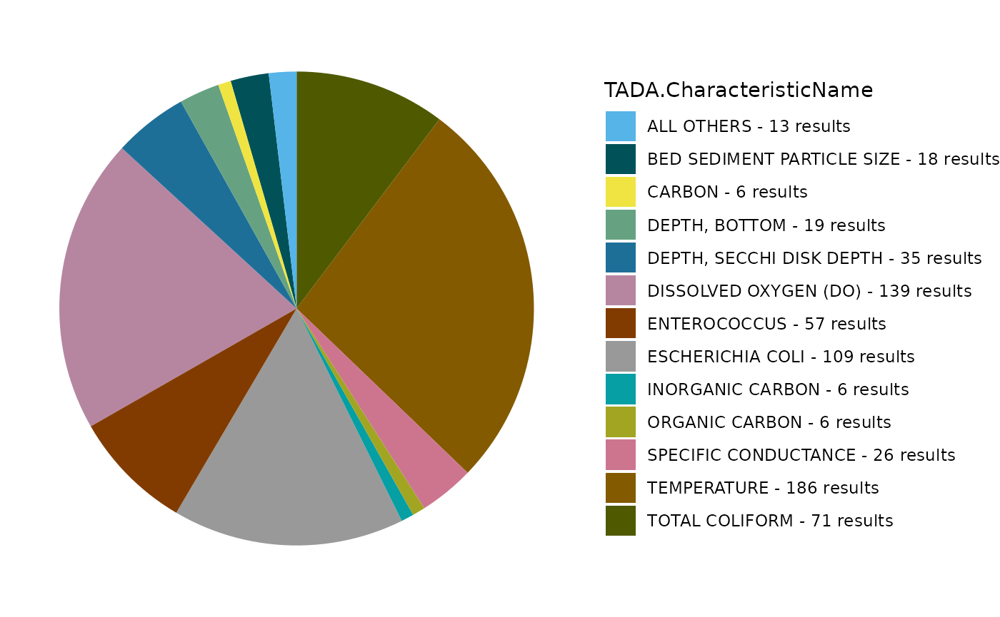

TADA Cybertown Workshop June 2025
TADA Team
2025-06-13
Source:vignettes/TADACybertown2025.Rmd
TADACybertown2025.RmdAccessing vignette
A vignette is a long-form guide to a package often written as a R Markdown document, such as this one. It provides detailed explanations of functions and showcases an example workflow. This vignette can be created as an html document or other format using the knit option on the top of the RStudio toolbar. Users can also access this vignette on the EPATADA Github page found (here).
Install
First, install and load the remotes package specifying the repo. This is needed before installing the EPATADA R package because it is only available on GitHub.
install.packages("remotes", repos = "http://cran.us.r-project.org")
library(remotes)Next, install (or update) the EPATADA R package using the remotes R package. Additional dependency R packages that are used within EPATADA will be downloaded automatically. You may be prompted in the console to update dependency packages that have more recent versions available. If you see this prompt, it is recommended to update all of them (enter 1 into the console). Our team is actively developing EPATADA, therefore we highly recommend that you update the package (and all of its dependencies) each time you use it.
remotes::install_github("USEPA/EPATADA", ref = "develop", dependencies = TRUE)Load the EPATADA R Package.
Record start time
start.time <- Sys.time()Retrieve
Query the WQP using TADA_DataRetrieval. TADA_AutoClean is a powerful function that runs as part of TADA_DataRetrieval when applyautoclean = TRUE. It performs a variety of tasks, for example:
creating new “TADA” prefixed columns and and capitalizing their contents to reduce case sensitivity issues,
converts special characters in value columns,
converts latitude and longitude values to numeric,
replaces “meters” with “m”,
replaces deprecated characteristic names with current WQX names,
harmonizes result and detection limit units,
converts depths to meters, and
creates the column TADA.ComparableDataIdentifier by concatenating characteristic name, result sample fraction, method speciation, and result measure unit.
In this example, we will first leverage EPA’s How’s My Waterway (HMW) application to discover an ATTAINS Assessment Unit of interest (example waterbody report). Then, we will use the Assessment Unit ID to query ATTAINS geospatial services for the associated shapefile (polygon area of the Assessment Unit). Now we can use this shapefile (only works for polygons for now) as our input for the new aoi_sf query option included in TADA_DataRetrieval. This allows us to download WQP data within the Assessment Unit (our area of interest/AOI).
query.params <- list(
where = "assessmentunitidentifier IN ('CT6400-00-1-L5_01')",
outFields = "*",
f = "geojson"
)
url <- "https://gispub.epa.gov/arcgis/rest/services/OW/ATTAINS_Assessment/MapServer/2/query?"
poly.response <- httr::GET(url, query = query.params)
poly.geojson <- httr::content(poly.response, as = "text", encoding = "UTF-8")
poly.sf <- sf::st_read(poly.geojson, quiet = TRUE)
WQP_raw <- TADA_DataRetrieval(
startDate = "null",
endDate = "null",
aoi_sf = poly.sf,
countrycode = "null",
countycode = "null",
huc = "null",
siteid = "null",
siteType = "null",
tribal_area_type = "null",
tribe_name_parcel = "null",
characteristicName = "null",
characteristicType = "null",
sampleMedia = "null",
statecode = "null",
organization = "null",
project = "null",
providers = "null",
bBox = "null",
maxrecs = 350000,
ask = FALSE,
applyautoclean = TRUE
)## [1] "Downloading WQP query results. This may take some time depending upon the query size."
## list()
## [1] "Data successfully downloaded. Running TADA_AutoClean function."
## [1] "TADA_Autoclean: creating TADA-specific columns."
## [1] "TADA_Autoclean: harmonizing dissolved oxygen characterisic name to DISSOLVED OXYGEN SATURATION if unit is % or % SATURATN."
## [1] "TADA_Autoclean: handling special characters and coverting TADA.ResultMeasureValue and TADA.DetectionQuantitationLimitMeasure.MeasureValue value fields to numeric."
## [1] "TADA_Autoclean: converting TADA.LatitudeMeasure and TADA.LongitudeMeasure fields to numeric."
## [1] "TADA_Autoclean: harmonizing synonymous unit names (m and meters) to m."
## [1] "TADA_Autoclean: updating deprecated (i.e. retired) characteristic names."
## [1] "No deprecated characteristic names found in dataset."
## [1] "TADA_Autoclean: harmonizing result and depth units."
## [1] "TADA_Autoclean: creating TADA.ComparableDataIdentifier field for use when generating visualizations and analyses."
## [1] "NOTE: This version of the TADA package is designed to work with numeric data with media name: 'WATER'. TADA_AutoClean does not currently remove (filter) data with non-water media types. If desired, the user must make this specification on their own outside of package functions. Example: dplyr::filter(.data, TADA.ActivityMediaName == 'WATER')"
# # For demo purposes, we pre-downloaded this example data
# WQP_raw <- cybertownRemove intermediate variables in R by using ‘rm()’.
rm(poly.response, poly.sf, query.params, poly.geojson, url)Flag, clean, and visualize
Now, let’s use EPATADA functions to review, visualize, and whittle the returned WQP data down to include only results that are applicable to our water quality analysis and area of interest.
TADA is primarily designed to accommodate water data from the WQP. Let’s see what activity media types are represented in the data set. Are there any media type that are not water in our data frame?
# Create table with count for each ActivityMediaName
TADA_FieldValuesTable(
WQP_raw,
field = "ActivityMediaName",
characteristicName = "null"
)## Value Count
## 1 Water 990The TADA_AnalysisDataFilter function can assist in identifying and filtering surface water, groundwater, and sediment results. If you set clean = FALSE, this function will categorize and flag (but not remove) rows in a new TADA.UseForAnalysis.Flag column for review. However, the default functionality (clean = TRUE) is to include surface water and exclude groundwater and sediment results. For this example, we will choose to exclude any results that have been explicitly identified as groundwater or sediment if any results were found. Our data set does not contain any ground water or sediment results to remove.
WQP_flag <- TADA_AnalysisDataFilter(
WQP_raw,
clean = FALSE,
surface_water = TRUE,
ground_water = FALSE,
sediment = FALSE
)## [1] "TADA_AnalysisDataFilter: Identifying groundwater results."
## [1] "TADA_AnalysisDataFilter: Flagging surface water results to include in assessments."
## [1] "TADA_AnalysisDataFilter: Flagging groundwater results to exclude from assessments."
## [1] "TADA_AnalysisDataFilter: Flagging sediment results to exclude from assessments."
## [1] "TADA_AnalysisDataFilter: Returning all results with TADA.UseForAnalysis.Flag column indicating if result should be used for assessments."
# Review unique flags
unique(WQP_flag$TADA.UseForAnalysis.Flag)## [1] "Yes - SURFACE WATER" "No - NA"
# Keep rows that are NOT flagged as sediment (keep SW and NA)
WQP_clean <- WQP_flag %>%
dplyr::filter(TADA.UseForAnalysis.Flag != "No - SEDIMENT")Create an overview map.
TADA_OverviewMap(WQP_clean)Let’s take a quick look at all unique values in the MonitoringLocationIdentifier column and see how how many results are associated with each.
# use TADA_FieldValuesTable to create a table of the number of results per MonitoringLocationIdentifier
sites <- TADA_FieldValuesTable(
WQP_clean,
field = "MonitoringLocationIdentifier",
characteristicName = "null"
)
DT::datatable(sites, fillContainer = TRUE)Are there sites located within 100 meters of each other?
WQP_clean <- TADA_FindNearbySites(
WQP_clean,
dist_buffer = 100,
nhd_res = "Hi",
org_hierarchy = "none",
meta_select = "random"
)## [1] "TADA_FindNearbySites: No org_hierarchy supplied by user. Organization will not be taken into account during metadata selection."
TADA_NearbySitesMap(WQP_clean)Now let’s review all unique values in the TADA.ComparableDataIdentifier column and see how how many results are associated with each. TADA.ComparableDataIdentifier concatenates TADA.CharacteristicName, TADA.ResultSampleFractionText, TADA.MethodSpeciationName, and TADA.ResultMeasure.MeasureUnitCode.
# use TADA_FieldValuesTable to create a table of the number of results per TADA.ComparableDataIdentifier
chars <- TADA_FieldValuesTable(
WQP_clean,
field = "TADA.ComparableDataIdentifier",
characteristicName = "null"
)
DT::datatable(chars, fillContainer = TRUE)Remove intermediate variables in R by using ‘rm()’.
rm(chars, sites, WQP_flag_review, WQP_flag)Next, let’s check if the dataset contains potential duplicate results from within a single organization or from within multiple organizations (such as when two or more organizations monitor the same location and may submit duplicate results).
If you would like to prioritize results from one organization over
another, this can be done using the org_hierarchy argument in
TADA_FindPotentialDuplicatesMultipleOrgs.
# find duplicates from single org
WQP_flag <- TADA_FindPotentialDuplicatesSingleOrg(WQP_clean)## [1] "TADA_FindPotentialDuplicatesSingleOrg: 69 groups of potentially duplicated results found in dataset. These have been placed into duplicate groups in the TADA.SingleOrgDupGroupID column and the function randomly selected one result from each group to represent a single, unduplicated value. Selected values are indicated in the TADA.SingleOrgDup.Flag as 'Unique', while duplicates are flagged as 'Duplicate' for easy filtering."
# Review organizations. You can select one to prioritize in TADA_FindPotentialDuplicatesMultipleOrgs
unique(WQP_flag$OrganizationIdentifier)## [1] "USGS-CT" "CT_DEP01" "NALMS" "CTVOLMON"
unique(WQP_flag$OrganizationFormalName)## [1] "USGS Connecticut Water Science Center"
## [2] "Connecticut Dept. of Environmental Protection"
## [3] "North American Lake Management Society"
## [4] "CT DEEP Volunteer Water Monitoring Program (Volunteer)"
# find duplicates across multiple orgs
WQP_flag <- TADA_FindPotentialDuplicatesMultipleOrgs(
WQP_flag,
org_hierarchy = c("CT_DEP01", "USGS-CT", "CTVOLMON", "NALMS")
)## [1] "No duplicate results detected. Returning input dataframe with duplicate flagging columns set to 'N'."Let’s review the duplicates:
WQP_flag_review <- WQP_flag %>%
dplyr::select(
MonitoringLocationName,
TADA.MonitoringLocationIdentifier,
# TADA.MultipleOrgDuplicate,
# TADA.MultipleOrgDupGroupID,
# TADA.ResultSelectedMultipleOrgs,
TADA.SingleOrgDupGroupID,
TADA.SingleOrgDup.Flag,
TADA.ComparableDataIdentifier,
ResultMeasureValue,
TADA.ResultMeasure.MeasureUnitCode,
TADA.MonitoringLocationName,
TADA.NearbySites.Flag,
TADA.NearbySiteGroup,
OrganizationIdentifier
) %>%
dplyr::filter(TADA.SingleOrgDupGroupID != "Not a duplicate") %>%
dplyr::distinct()We will select to keep only unique samples from
TADA_FindPotentialDuplicatesSingleOrg by filtering for
TADA.SingleOrgDup.Flag equals “Unique”.
There are no multiple org duplicates from
TADA_FindPotentialDuplicatesMultipleOrgs in this example,
but if there were, duplicates can by removed by filtering for
TADA.ResultSelectedMultipleOrgs equals “Y”.
WQP_clean <- WQP_flag %>%
dplyr::filter(TADA.SingleOrgDup.Flag == "Unique") %>%
dplyr::filter(TADA.ResultSelectedMultipleOrgs == "Y")Remove intermediate variables in R by using ‘rm()’. In the remainder of this workshop, we will work with the clean data set.
rm(WQP_flag, WQP_flag_review)Censored data are measurements for which the true value is not known,
but we can estimate the value based on known lower or upper detection
conditions and limit types. TADA fills missing
TADA.ResultMeasureValue and
TADA.ResultMeasure.MeasureUnitCode values with values and units
from TADA.DetectionQuantitationLimitMeasure.MeasureValue and
TADA.DetectionQuantitationLimitMeasure.MeasureUnitCode,
respectively, using the TADA_AutoClean function.
The TADA package currently has functions that summarize censored data
incidence in the dataset and perform simple substitutions of censored
data values, including x times the detection limit and random selection
of a value between 0 and the detection limit. The user may specify the
methods used for non-detects and over-detects separately in the input to
the TADA_SimpleCensoredMethods function. The next step we
take in this example is to perform simple conversions to the censored
data in the dataset: we keep over-detects as is (no conversion made) and
convert non-detect values to 0.5 times the detection limit (half the
detection limit).
WQP_clean <- TADA_SimpleCensoredMethods(
WQP_clean,
nd_method = "multiplier",
nd_multiplier = 0.5,
od_method = "as-is",
od_multiplier = "null"
)## [1] "Dataframe does not include any information (all NA's) in MeasureQualifierCode."
## [1] "TADA_IDCensoredData: No censored data detected in your dataframe. Returning input dataframe with new column TADA.CensoredData.Flag set to Uncensored"
## [1] "Cannot apply simple censored methods to dataframe with no censored data results. Returning input dataframe."TADA_AutoFilter removes rows where the result value is
not numeric to prepare a dataframe for quantitative analyses.
Specifically, this function removes rows with “Text” and “NA - Not
Available” in the TADA.ResultMeasureValueDataTypes.Flag column, or NA in
the TADA.ResultMeasureValue column. In addition, this function removes
results with QA/QC ActivityTypeCode’s. This function also removes any
columns not required for TADA workflow where all values are equal to
NA.
WQP_clean <- TADA_AutoFilter(WQP_clean)## [1] "Quality control samples have been removed or were not present in the input dataframe. Returning dataframe with TADA.ActivityType.Flag column for tracking."
## [1] "TADA_Autofilter: removing columns not required for TADA workflow if they contain only NAs."
## [1] "The following column(s) were removed as they contained only NAs: ActivityDepthAltitudeReferencePointText, ActivityEndDate, ActivityEndTime.Time, ActivityEndTime.TimeZoneCode, SampleAquifer, ResultTemperatureBasisText, BinaryObjectFileName, BinaryObjectFileTypeCode, AnalysisStartDate, ResultDetectionQuantitationLimitUrl, LabSamplePreparationUrl, SourceMapScaleNumeric, VerticalAccuracyMeasure.MeasureValue, VerticalAccuracyMeasure.MeasureUnitCode, VerticalCollectionMethodName, FormationTypeText, ProjectMonitoringLocationWeightingUrl, DrainageAreaMeasure.MeasureValue, DrainageAreaMeasure.MeasureUnitCode, ContributingDrainageAreaMeasure.MeasureValue and ContributingDrainageAreaMeasure.MeasureUnitCode."
## [1] "TADA_Autofilter: checking required columns for non-NA values."
## [1] "TADA Required column(s) SubjectTaxonomicName, SampleTissueAnatomyName, MethodSpeciationName, TADA.MethodSpeciationName, ResultDetectionConditionText, DetectionQuantitationLimitTypeName, DetectionQuantitationLimitMeasure.MeasureValue, DetectionQuantitationLimitMeasure.MeasureUnitCode, TADA.DetectionQuantitationLimitMeasure.MeasureValue, TADA.DetectionQuantitationLimitMeasure.MeasureUnitCode, ResultDepthAltitudeReferencePointText, ActivityRelativeDepthName, ActivityDepthHeightMeasure.MeasureValue, TADA.ActivityDepthHeightMeasure.MeasureValue, ActivityDepthHeightMeasure.MeasureUnitCode, TADA.ActivityDepthHeightMeasure.MeasureUnitCode, ActivityTopDepthHeightMeasure.MeasureValue, TADA.ActivityTopDepthHeightMeasure.MeasureValue, ActivityTopDepthHeightMeasure.MeasureUnitCode, TADA.ActivityTopDepthHeightMeasure.MeasureUnitCode, ActivityBottomDepthHeightMeasure.MeasureValue, TADA.ActivityBottomDepthHeightMeasure.MeasureValue, ActivityBottomDepthHeightMeasure.MeasureUnitCode, TADA.ActivityBottomDepthHeightMeasure.MeasureUnitCode, ResultTimeBasisText, StatisticalBaseCode, ResultFileUrl, ResultAnalyticalMethod.MethodName, ResultAnalyticalMethod.MethodDescriptionText, ResultAnalyticalMethod.MethodUrl, MeasureQualifierCode, DataQuality.PrecisionValue, DataQuality.BiasValue, DataQuality.ConfidenceIntervalValue, DataQuality.UpperConfidenceLimitValue, DataQuality.LowerConfidenceLimitValue, LaboratoryName, ResultLaboratoryCommentText, ProjectFileUrl, AquiferName, AquiferTypeName, LocalAqfrName, ConstructionDateText, WellDepthMeasure.MeasureValue, WellDepthMeasure.MeasureUnitCode, WellHoleDepthMeasure.MeasureValue and WellHoleDepthMeasure.MeasureUnitCode contain only NA values. This may impact other TADA functions."
## [1] "Function removed 189 results. These results are either text or NA and cannot be plotted or represent quality control activities (not routine samples or measurements)."TADA_RunKeyFlagFunctions is a shortcut function to run important TADA flagging functions. See ?function documentation for TADA_FlagResultUnit, TADA_FlagFraction, TADA_FindQCActivities, TADA_FlagMeasureQualifierCode, and TADA_FlagSpeciation for more information.
WQP_clean <- TADA_RunKeyFlagFunctions(
WQP_clean,
clean = TRUE
)## [1] "Quality control samples have been removed or were not present in the input dataframe. Returning dataframe with TADA.ActivityType.Flag column for tracking."
## [1] "Dataframe does not include any information (all NA's) in MeasureQualifierCode."Another set of TADA flagging functions,
TADA_FlagAboveThreshold and
TADA_FlagBelowThreshold, can be used to check results
against national lower and upper thresholds. For these, we will set
clean = FALSE and flaggedonly = TRUE so that it returns only flagged
results in the review dataframe returned. We will keep these in our
“clean” dataframe for now.
WQP_flag_reviewabove <- TADA_FlagAboveThreshold(WQP_clean, clean = FALSE, flaggedonly = TRUE)
WQP_flag_reviewbelow <- TADA_FlagBelowThreshold(WQP_clean, clean = FALSE, flaggedonly = TRUE)## [1] "This dataframe is empty because no data below the WQX Lower Threshold was found in your dataframe"Remove intermediate variables.
rm(WQP_flag_reviewabove, WQP_flag_reviewbelow)Let’s take another look at all unique values in the TADA.ComparableDataIdentifier column and see how how many results are associated with each. TADA.ComparableDataIdentifier concatenates TADA.CharacteristicName, TADA.ResultSampleFractionText, TADA.MethodSpeciationName, and TADA.ResultMeasure.MeasureUnitCode.
# use TADA_FieldValuesTable to create a table of the number of results per TADA.ComparableDataIdentifier
chars <- TADA_FieldValuesTable(
WQP_clean,
field = "TADA.ComparableDataIdentifier",
characteristicName = "null"
)
chars_before <- unique(WQP_clean$TADA.ComparableDataIdentifier)
DT::datatable(chars, fillContainer = TRUE)Scroll through the table and check to see if there any synonyms. It
may be possible that some of these can be automatically harmonized using
TADA_HarmonizeSynonyms so their results can be directly
compared.
Let’s give it a try.
WQP_clean <- TADA_HarmonizeSynonyms(WQP_clean)How many unique TADA.ComparableDataIdentifier’s do we have now? In this example, there were no synonyms.
chars_after <- unique(WQP_clean$TADA.ComparableDataIdentifier)Remove intermediate variables.
rm(chars_before, chars_after)Create a pie chart.
TADA_FieldValuesPie(
WQP_clean,
field = "TADA.CharacteristicName",
characteristicName = "null"
)
Select characteristic
Let’s filter the data and focus on a one characteristic of interest.
# Select characteristics of interest
WQP_clean_subset <- WQP_clean %>%
dplyr::filter(TADA.CharacteristicName %in% "ESCHERICHIA COLI")Remove intermediate variables. We will focus on the subset from now on.
rm(WQP_clean, chars)Integrate ATTAINS and map
In this section, we will associate geospatial data from ATTAINS with the WQP data. Our initial WQP data pull was done using a shapefile for Assessment Unit CT6400-00-1-L5_01. TADA functions can pull in additional ATTAINS meta data for this assessment unit. We can also generate a new table to give us some information about the individual monitoring locations within this assessment unit.
- TADA_GetATTAINS() automates matching of WQP monitoring locations with ATTAINS assessment units that fall within (intersect) the same NHDPlus catchment (details)
- The function uses high resolution NHDPlus catchments by default because 80% of state submitted assessment units in ATTAINS were developed based on high res NHD; users can select med-res if applicable to their use case
WQP_clean_subset_spatial <- TADA_GetATTAINS(
WQP_clean_subset,
return_nearest = TRUE,
fill_catchments = FALSE,
resolution = "Hi",
return_sf = TRUE
)
# Adds ATTAINS info to df
WQP_clean_subset <- WQP_clean_subset_spatial$TADA_with_ATTAINSView catchments and assessment units on map
ATTAINS_map <- TADA_ViewATTAINS(WQP_clean_subset_spatial)
ATTAINS_mapRemove intermediate variables:
rm(ATTAINS_map)Create table of monitoring location identifiers and AUs.
ML_AU_crosswalk <- WQP_clean_subset %>%
dplyr::select(TADA.MonitoringLocationIdentifier, ATTAINS.assessmentunitidentifier, ATTAINS.assessmentunitname, TADA.CharacteristicName) %>%
dplyr::distinct()Remove intermediate variables. Let’s keep going with WQP_clean_subset.
rm(ML_AU_crosswalk, WQP_clean_subset_spatial)TADA_RetainRequired removes all duplicate columns where
TADA has created a new column with a TADA prefix. It retains all TADA
prefixed columns as well as other original fields that are either
required by other TADA functions or are commonly used filters.
WQP_clean_subset <- TADA_RetainRequired(WQP_clean_subset)## [1] "TADA_RetainRequired: removing columns not required for TADA workflow including original columns that have been replaced with TADA prefix duplicates."
## [1] "The following non-required columns were removed: ActivityConductingOrganizationText, ActivityLocation.LatitudeMeasure, ActivityLocation.LongitudeMeasure, ResultWeightBasisText, ResultParticleSizeBasisText, USGSPCode, ActivityStartTime.TimeZoneCode_offset, HorizontalAccuracyMeasure.MeasureValue, HorizontalAccuracyMeasure.MeasureUnitCode, HorizontalCollectionMethodName, VerticalMeasure.MeasureValue, VerticalMeasure.MeasureUnitCode, VerticalCoordinateReferenceSystemDatumName, ProviderName and LastUpdated."Exploratory analysis
Review unique TADA.ComparableDataIdentifier’s
unique(WQP_clean_subset$TADA.ComparableDataIdentifier)## [1] "ESCHERICHIA COLI_NA_NA_CFU/100ML"Let’s check if any results are above the EPA 304A recommended maximum criteria magnitude (see: 2012 Recreational Water Quality Criteria Fact Sheet).
![EPA 2012 recreational water quality criteria (RWQC) recommendations for protecting human health in all coastal and non-coastal waters designated for primary contact recreation use. EPA provides two sets of recommended criteria. The RWQC consist of three components: magnitude, duration and frequency. The magnitude of the bacterial indicators are described by both a geometric mean (GM) and a statistical threshold value (STV) for the bacteria samples. The waterbody GM should not be greater than the selected GM magnitude in any 30-day interval. The STV approximates the 90th percentile of the water quality distribution and is intended to be a value that should not be exceeded by more than 10 percent of the samples in the same 30-day interval. The table summarizes the magnitude component of the recommendations.](images/bacteria.png)
If interested, you can find other state, tribal, and EPA 304A criteria in EPA’s Criteria Search Tool.
Let’s check if any individual results exceed 320 CFU/100mL (the magnitude component of the EPA recommendation 2 criteria for ESCHERICHIA COLI).
# add column with comparison to criteria mag (excursions)
WQP_clean_subset <- WQP_clean_subset %>%
sf::st_drop_geometry() %>%
dplyr::mutate(meets_criteria_mag = ifelse(TADA.ResultMeasureValue <= 320, "Yes", "No"))
# review
WQP_clean_subset_review <- WQP_clean_subset %>%
dplyr::select(
MonitoringLocationIdentifier, OrganizationFormalName, ActivityStartDate, TADA.ResultMeasureValue,
meets_criteria_mag
)
DT::datatable(WQP_clean_subset_review, fillContainer = TRUE)Generate stats table. Review percentiles. Less than 5% of results fall above 10 CFU/100mL, and over 98% of results fall below 265.2 CFU/100m.
WQP_clean_subset_stats <- WQP_clean_subset %>%
sf::st_drop_geometry() %>%
TADA_Stats()Generate a scatterplot. One result value is above the threshold.
TADA_Scatterplot(WQP_clean_subset, id_cols = "TADA.ComparableDataIdentifier") %>%
plotly::add_lines(
y = 320,
x = c(min(WQP_clean_subset$ActivityStartDate), max(WQP_clean_subset$ActivityStartDate)),
inherit = FALSE,
showlegend = FALSE,
line = list(color = "red"),
hoverinfo = "none"
)Generate a histogram.
TADA_Histogram(WQP_clean_subset, id_cols = "TADA.ComparableDataIdentifier")TADA_Boxplot can be useful for identifying skewness and
percentiles.
TADA_Boxplot(WQP_clean_subset, id_cols = "TADA.ComparableDataIdentifier")Record end time
end.time <- Sys.time()
end.time - start.time## Time difference of 13.84256 secsReproducible and Documented
This workflow is reproducible and the decisions at each step are well documented. This means that it is easy to go back and review every step, understand the decisions that were made, make changes as necessary, and run it again.